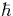
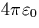

| Abbreviation | Definition |
| AIMPRO | Ab Initio Modelling PROgram |
| CNDO | Complete Neglect of Differential Overlap |
| DFT | Density Functional Theory |
| DLTS | Deep Level Transient Spectroscopy |
| EMT | Effective Mass Theory |
| ENDOR | Electron Nuclear DOuble Resonance spectroscopy |
| EPR | Electron Paramagnetic Resonance |
| FTIR | Fourier Transform Infra-Red spectroscopy |
| LDA | Local Density Approximation |
| LVM | Local Vibrational Mode |
| MINDO/3 | Modified Intermediate Neglect of Differential Overlap |
| PL | Photoluminescence |
| PTIS | Photo-Thermal Ionisation Spectroscopy |
| STD | Shallow Thermal Donor |
| TD | Thermal Donor (also TDD, Thermal Double Donor) |
Certain standard notations have been adopted when labelling defects.
Defects identified in the format NLx, where x is numeric, have
been detected using EPR and ENDOR![[*]](foot_motif.gif) . Defects
detected using PL are referred to by the single letter label given to
their zero phonon line, e.g. `P-line' defects. There is no standard
notation for defects detected using FTIR. Note that the same defect
may be known under different names depending on the method used to
detect it. Detailed correlation experiments are required to determine
this. Equally, since defect signals are assigned a given notation, it
may be that the same defect in different charge or spin states may
have been assigned different names.
. Defects
detected using PL are referred to by the single letter label given to
their zero phonon line, e.g. `P-line' defects. There is no standard
notation for defects detected using FTIR. Note that the same defect
may be known under different names depending on the method used to
detect it. Detailed correlation experiments are required to determine
this. Equally, since defect signals are assigned a given notation, it
may be that the same defect in different charge or spin states may
have been assigned different names.
All equations are in atomic units unless stated, i.e. ,e, me and  are all set to unity. The results chapters use Angstroms (Å) for length and electron volts (eV) for energy since these are generally used in the field; 1 a.u. of energy is 27.212 eV, 1 a.u. of length is 0.529 Å.